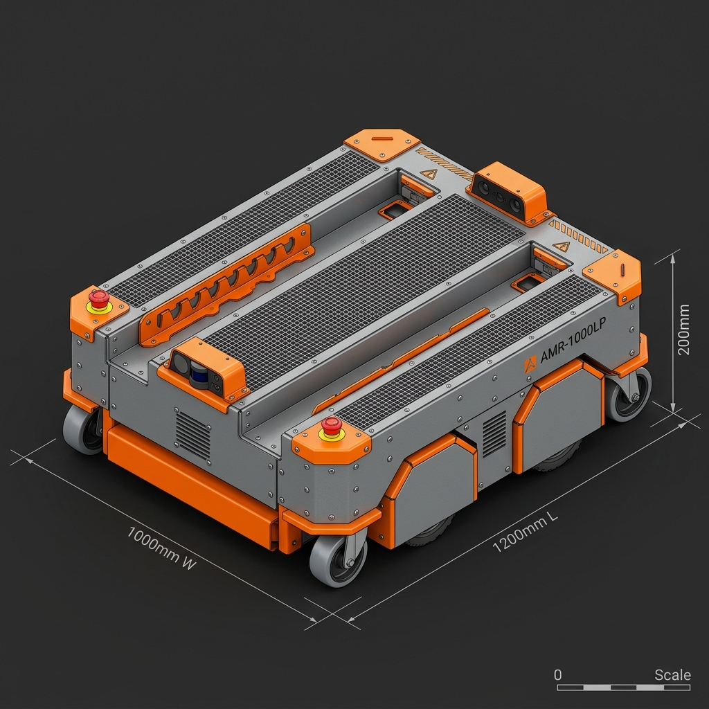
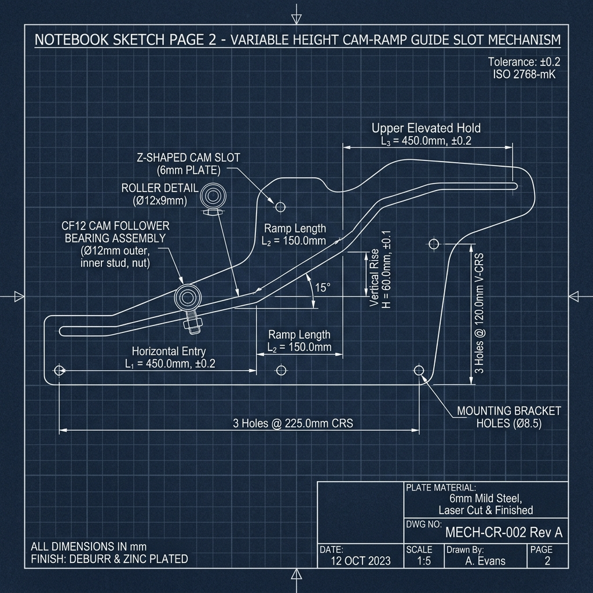

This document presents a complete mechanical analysis, rough CAD part dimensions, and sheet metal fabrication guidelines for your custom 1000\text{ mm} \times 1200\text{ mm} Low-Profile Pallet AMR based on the 3 hand-drawn notebook design sketches (Pages 8, 11, and 12).
As shown in your hand-drawn sketches:
Constructed with bended 3.0\text{ mm} steel sheet metal, side drive compartments, laser-cut cam guide slot side plates, corner casters, and two recessed fork channels:

Detailing the Z-shaped sloped cam slot track profile drawn on Notebook Page 11:

| Parameter | Recommended Dimension | Design Rationale & Clearance |
|---|---|---|
| Overall Width (W) | 1000 mm | User target width |
| Overall Length (L) | 1200 mm | User target length (fits standard 1200\text{ mm} ISO / EUR pallets) |
| Lowered Chassis Height (H_{low}) | 200 mm | Calculated Minimum Height: Includes 160\text{ mm} drive wheel, 25\text{ mm} ground clearance, and 3.0\text{ mm} top/bottom sheet metal deck plates |
| Raised Deck Height (H_{raised}) | 260 mm | Adds 60\text{ mm} vertical elevation travel from the cam Z-ramp |
| Pallet Entry Fork Height | 90 mm | Lowered fork thickness to enter standard pallet pockets (100\text{ mm} opening) |
| Minimum Ground Clearance | 25 mm | Base sheet metal plate clearance above factory floor |
Use the dimensional table below to begin modeling individual parts and sheet metal features in your CAD software (SolidWorks, Fusion 360, or Inventor):
| Part Name / Module | Material & Thickness | Key Dimensions (mm) | CAD Feature & Sheet Metal Notes |
|---|---|---|---|
| 1. Main Outer Chassis Hull | 3.0\text{ mm} CRCA Mild Steel | 1000\text{ W} \times 1200\text{ L} \times 200\text{ H} | Outer bended enclosure with 15\text{ mm} stiffening lips and corner laser cutouts |
| 2. Left & Right Drive Bays | 3.0\text{ mm} Mild Steel Sheet | 220\text{ W} \times 1200\text{ L} \times 200\text{ H} | Two side compartments housing motors, 24V/48V battery, controllers, and LiDARs |
| 3. Recessed Fork Channels | 4.0\text{ mm} Mild Steel Sheet | Outer Width: 560 mm Tyne Width: 160 mm Inner Gap: 240 mm | Centered between side bays (220 + 160 + 240 + 160 + 220 = 1000\text{ mm}). Tyne length: 1050\text{ mm} |
| 4. Cam Guide Slot Side Plates | 6.0\text{ mm} Heavy Steel Plate | 1100\text{ L} \times 160\text{ H} (Laser cut) | 2\times side plates with CNC laser-cut 12.2\text{ mm} wide Z-shaped cam tracks |
| Cam Track Breakdown: | |||
| *-- Horizontal Entry (L_1)* | Laser-cut Slot | Length: 450 mm, Height: 40\text{ mm} | Fork lowered entry position (90\text{ mm} deck height) |
| *-- Sloped Ramp (L_2)* | 15^\circ Inclined Slot | Length: 150 mm, Rise: 60 mm | 60\text{ mm} vertical elevation ramp curve |
| *-- Elevated Hold (L_3)* | Laser-cut Slot | Length: 450 mm, Height: 100\text{ mm} | Retracted raised position (260\text{ mm} deck height) |
| 5. Cam Follower Bearings | Stud-Type Bearings (CF12) | \varnothing 30\text{ mm} Outer, \varnothing 12\text{ mm} Stud | 4\times Heavy-duty stud cam followers mounted to inner fork carriage |
| 6. Inner Lifting Fork Carriage | 4.0\text{ mm} Steel Sheet Weldment | 550\text{ W} \times 950\text{ L} \times 120\text{ H} | Bent U-frame carrying the top tynes with tab-and-slot welding alignment notches |
| 7. Drive Wheels (Differential) | Polyurethane on Aluminum | \varnothing 160\text{ mm} \times 50\text{ mm} Width | 2\times Center differential drive wheels (\varnothing 25\text{ mm} shaft bore) |
| 8. Corner Swivel Casters | Polyurethane Casters | \varnothing 75\text{ mm} Wheel Dia | 4\times Corner swivel casters (100\text{ mm} total mounting height) |
| 9. Drive Motors & Gearbox | BLDC Servo Motors | 750W 24V (1:20 Planetary) | 2\times Motors mounted inside the 220\text{ mm} side bays |
1. Bending Parameters:
2. Bend Reliefs:
3. Tab-and-Slot Alignment Notches:
4. Cam Track Surface Hardening: